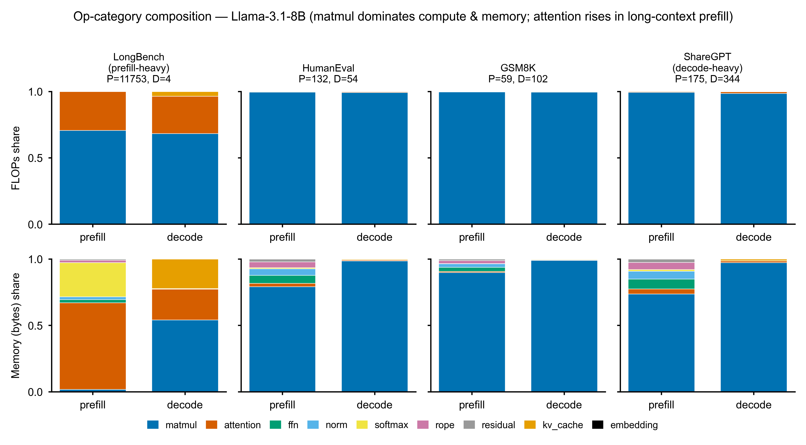
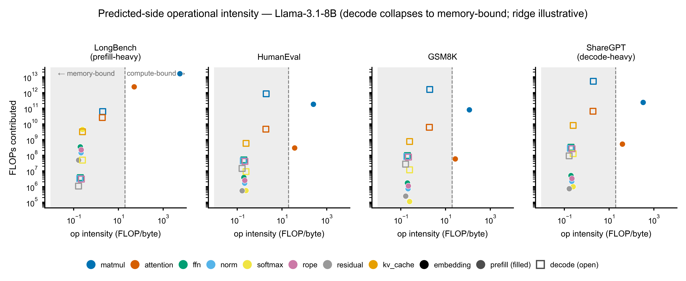
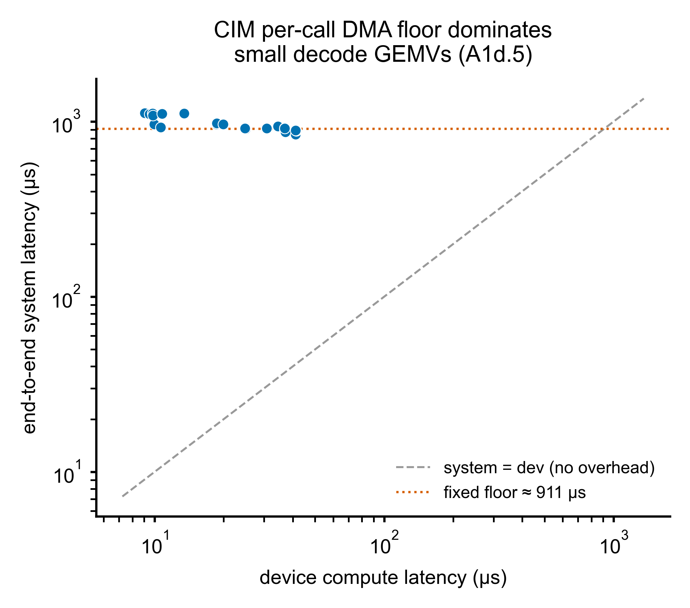
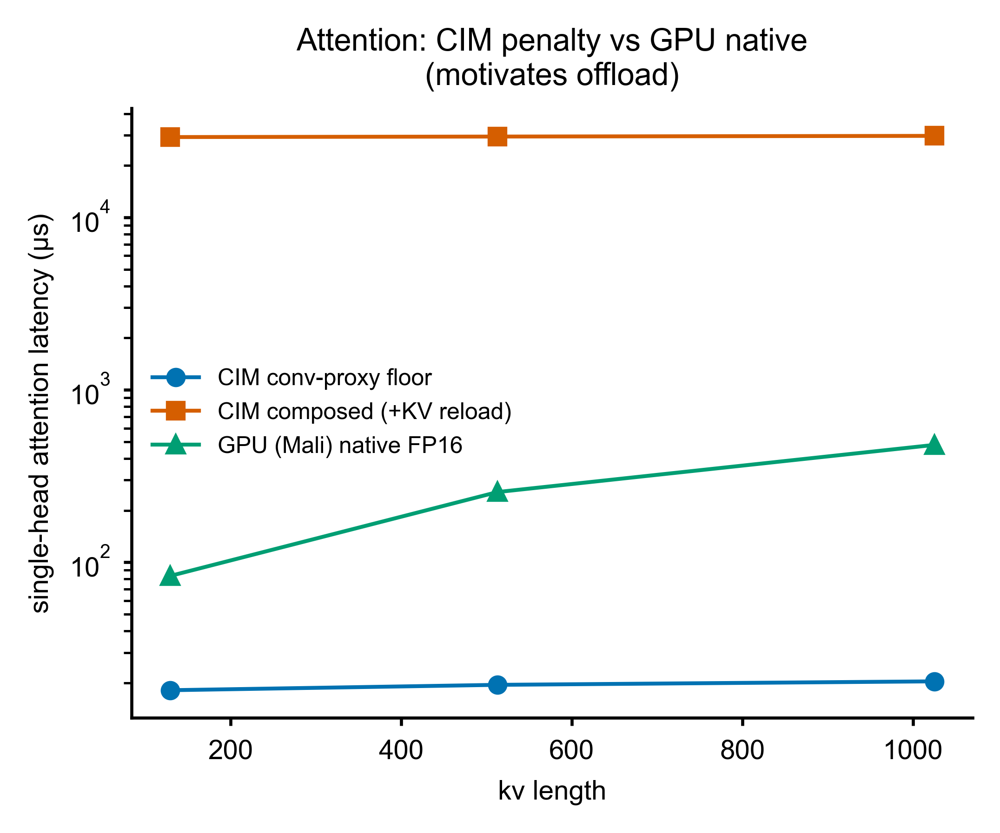
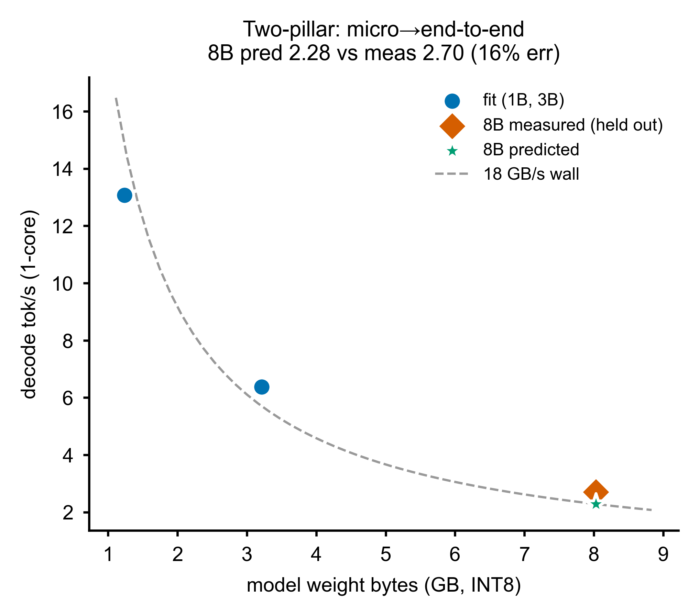

Real-silicon-calibrated simulator · Phase 0 characterization
From op inventory to silicon: workload statistics and board characterization across Phases 0.1–0.3
We characterize LLM inference for a simulated CIM-enabled heterogeneous mobile SoC, calibrated against two real Axelera Metis boards. Phase 0.1 extracts a device-independent op inventory (580 distinct op×shape signatures across 9 categories) from four HuggingFace models under four workloads. Phase 0.2 turns this into a per-(model×workload) execution profile: weight-stationary matmul dominates compute everywhere, decode is uniformly memory-bound (operational intensity = 2.0 FLOP/byte), and only long-context prefill is attention-memory-bound. Phase 0.3 measures the real silicon: the Compute-in-Memory unit (Metis Alpha, via a weight-stationary 1×1-conv proxy) is fast on matmul but pays a ~911 µs per-call DMA floor and, for dynamic attention it cannot keep stationary, a ~29 ms/token reload penalty — 62–351× slower than GPU-native — the empirical basis for a CIM-centric design that offloads attention. A micro→end-to-end bridge fit on 1B/3B predicts the held-out 8B decode throughput to 16 %, with an effective bandwidth (16–22 GB/s) that tracks the production card's documented ~24 GB/s decode wall.
Commercial discrete CIM accelerators (Axelera Metis, Hailo, Mythic, Untether) ship as PCIe/M.2 cards; mobile SoCs integrate NPU + GPU + CPU over shared LPDDR. Their combination — CIM as a unified-memory-attached peer compute unit on a heterogeneous mobile SoC — is where the industry is heading, yet is almost absent from the 2024–2026 literature for LLM workloads. Such a chip does not exist, and real Metis cards cannot be the research object directly (the Alpha cannot run LLM compute; the production card runs LLMs only through a closed, precompiled toolchain). We therefore study a simulated CIM-mobile SoC and use the real Metis silicon as calibration ground truth.
CIM-centric design discipline. The system is designed around CIM's limits first — it excels at weight-stationary GEMV, is poor at dynamic attention, needs channel-aligned tiles, and pays a host–device round trip. GPU/NPU/CPU are the support layer for what CIM cannot or should not do. Crucially, the op→unit assignment is decided by measurement, not assumed. This report is that measurement.
Three machines, one private repository as the single source of truth. All measurements store raw per-iteration data; every figure in this report is a build artifact regenerable from committed JSON.
| Machine | Role | Key silicon | SDK |
|---|---|---|---|
| Mac (M3 Pro) | control / dev / git hub | — | — |
| aetina (RK3588) | CIM + GPU + NPU + CPU micro-bench | Metis Alpha 1 GiB · Mali-G610 · A76 | v1.3.1 |
| metiscard (i9-12900K) | end-to-end LLM (L4 anchor) | Metis Card 16 GiB · RTX 3090 | v1.6 |
| Model | layers | hidden | heads / kv | head_dim | ffn | vocab | tied |
|---|---|---|---|---|---|---|---|
| Llama-3.2-1B | 16 | 2048 | 32 / 8 | 64 | 8192 | 128256 | yes |
| Llama-3.2-3B | 28 | 3072 | 24 / 8 | 128 | 8192 | 128256 | yes |
| Llama-3.1-8B | 32 | 4096 | 32 / 8 | 128 | 14336 | 128256 | no |
| Qwen2.5-7B | 28 | 3584 | 28 / 4 | 128 | 18944 | 152064 | no |
| Task | Dataset | prefill | decode | regime |
|---|---|---|---|---|
| Long-context | LongBench-TriviaQA | 11753 | 4 | prefill-heavy |
| Code | HumanEval | 132 | 54 | moderate |
| QA / reasoning | GSM8K | 59 | 102 | balanced |
| Chat | ShareGPT | 175 | 344 | decode-heavy |
Validation layers cross-checked: L1 CIM per-op, L2 DRAM/PCIe, L3 NPU/GPU per-op, L4 end-to-end LLM (production card), L5 sensitivity, L6 end-to-end CNN (reused). This report covers L1–L4; the op→unit mapping is characterization-driven.
Using a PyTorch meta/FakeTensor + dispatch tracer with forced eager attention, we extract the
exact op×shape stream each model executes — device-independent, no GPU, no board. All four models
decompose into the same ~38 ATen primitives; the only op-set difference is Qwen's biased QKV
(addmm vs Llama's mm). A completeness cross-check and a real-weights 1B run
both pass. The deduplicated sweep matrix is 580 distinct
(op, in_shapes, out_shape) signatures, categorized by semantic origin into 9 classes:
matmul 105, attention 95, rope 190, norm 90, softmax 21, ffn 30, residual 20, embedding 20,
kv_cache 9. This is the op set Phases 0.2–0.3 weight and measure.
Phase 0.2 attaches weights to the sweep matrix: for every signature, how many times it executes in each (model × workload), plus FLOPs / bytes / operational intensity from shape. Counts come from the Phase-0.1 inventory (the counting oracle — never hand-rolled); off-grid workload-length shapes are generated by a data-driven length-template validated to reproduce held-out inventory points exactly for all four models. Intensity is the predicted side of the roofline; the measured knee is Phase 0.3.


We now measure the silicon. CIM is the Metis Alpha via a 1×1-conv proxy — faithful for
weight-stationary matmul/GEMV (the conv filter is a compile-time-constant weight), a compute lower
bound for attention (both operands are activations). A hard device-memory envelope
(K·N ≤ ~6M params allocatable) means large projections run as 2048×2048 crossbar tiles;
we measure one canonical tile and extrapolate n_tiles × tile_latency — itself the real
CIM tiling cost.
Decode-GEMV device throughput is 110–230 GFLOP/s, but the per-call DMA floor makes the
end-to-end latency of a tiny decode GEMV ~0.9 ms regardless of its compute (Figure 3). This
on-PCIe floor is the structural CIM cost: CIM wins on compute, loses on the round trip — and tiling a
large op multiplies the floor by n_tiles.
| Axis | Result |
|---|---|
| Device envelope | K·N ≤ ~6M params allocatable (6.3M ok, 8.4M+ fail); larger ops tiled 2048×2048 |
| A1d.2 channel staircase | dev latency 9.8 → 24.7 → 41.2 → 82.4 µs for N = 64, 1024, 2048, 3072 |
| A1d.3 (M,K,N) aspect | equal-MAC wide / tall 227, square 204 GFLOP/s (~10% aspect penalty) |
| A1d.4 l2 vs ddr | 1.00–1.01× — null axis (Alpha has no on-card DRAM; not extrapolable) |
| A1d.6 GQA-narrow waste | kv-proj (N = 512) 112 vs wide gate/up 204 GFLOP/s — ~55% utilization (1B) |

The conv-proxy attention compute floor is tiny (~20 µs single-head), but it ignores the
per-decode-step reload of the growing KV-cache into the crossbar. Composing the measured reload
(T = floor + layers · DMA_floor) gives ~29 ms/token, 99 % of it the per-layer
reload — an Alpha-topology upper bound, but the order of magnitude is the point:
CIM is 62–351× slower than GPU-native attention (Figure 4). Dynamic activation×activation attention
violates CIM's weight-stationary premise; it must be offloaded. This is the empirical heart of the
CIM-centric thesis.

The production Metis Card runs the vendor INT8 LLMs end-to-end (the L4 anchor). Decode is a near-pure weight-streaming memory wall, so we fit an effective decode bandwidth on 1B + 3B and predict the held-out 8B throughput (an ADR-0006 size-invariance test). The prediction lands at 2.28 vs measured 2.70 tok/s — 16 % error — and the implied bandwidth (16.2 / 20.5 / 21.7 GB/s) shows a genuine size trend bracketing the ~24 GB/s wall (Figure 5). Op-level structure plus Phase-0.2 counts compose into the real LLM's throughput: the L1→L4 link holds.

| Model | 1-core tok/s | 4-core tok/s | 4c/1c | TTFT (1c) | weight (GB) |
|---|---|---|---|---|---|
| Llama-3.2-1B | 13.07 | 14.77 | 1.13× | 0.55 s | 1.24 |
| Llama-3.2-3B | 6.38 | 6.99 | 1.10× | 1.13 s | 3.21 |
| Llama-3.1-8B | 2.70 | 2.92 | 1.08× | 3.79 s | 8.03 |
The measurements substantiate the CIM-centric position with real numbers, not assumptions:
core_temp is unsupported on the production
PCIe-Rev1 card; thermal characterization will use the Alpha RK3588 thermal zones.